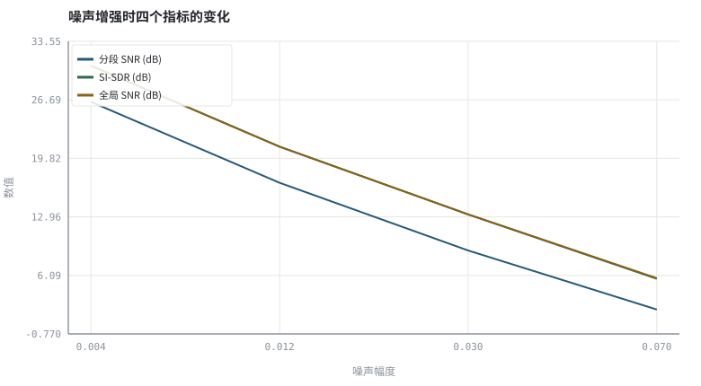
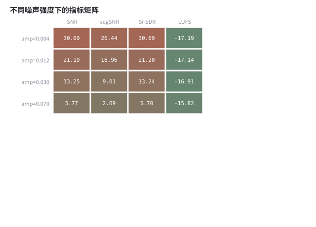

第 03 章怎么算「变好了」：客观指标、尺度与主观听测
没有度量就没有工程；但每个指标都只回答一个问题，且都带自己的陷阱。
本章位置：卷首结束。第 04 章 · 线性系统、卷积与频域实现 起进入上卷，先补线性系统与自适应滤波两块数学地基，再在 第 09 章 · AEC 总体结构：参考信号、线性滤波与残余抑制～第 14 章 · AGC：包络跟踪、攻击释放、限幅与响度 实现三大引擎。
指标是监控面板：ERLE 是回声模块的 unit test，segSNR 是信噪比 SLO，SI-SDR 是尺度不变的回归测试，DNSMOS 是线上无标签监控。只看一块面板做决策，迟早被「静音策略」骗过。
- 能计算 ERLE、分段 SNR、SI-SDR 与响度近似值。
- 能说明为什么 AGC 之后必须先做尺度对齐。
- 能区分有参考指标与无参考指标、 intrusive 与 non-intrusive。
- 能设计一组覆盖双讲与噪声类型的评测集。
§知识点地图
每个知识点都配了 1～2 个扩展学习链接；本章完整资源清单见 扩展学习。
| # | 知识点 | 扩展学习 | 状态 |
|---|---|---|---|
| 1 | ERLE 与回声残余 | Echo cancellation ↗ · WebRTC AEC3 模块 ↗ | 正文已覆盖 |
| 2 | 分段 SNR | ITU-T P.862 PESQ ↗ · ITU-T P.863 POLQA ↗ | 正文已覆盖 |
| 3 | SI-SDR 与尺度不变性 | ITU-T P.862 PESQ ↗ · ITU-T P.863 POLQA ↗ | 正文已覆盖 |
| 4 | PESQ / POLQA / STOI | ITU-T P.862 PESQ ↗ · ITU-T P.863 POLQA ↗ | 正文已覆盖 |
| 5 | DNSMOS 无参考评分 | ITU-T P.862 PESQ ↗ · ITU-T P.863 POLQA ↗ | 正文已覆盖 |
| 6 | LUFS 与真峰值 | ITU-T P.862 PESQ ↗ · ITU-T P.863 POLQA ↗ | 正文已覆盖 |
| 7 | 主观听测 P.835 | ITU-T P.835 ↗ · DNSMOS ↗ | 正文已覆盖 |
| 8 | 评测集设计 | ITU-T P.862 PESQ ↗ · ITU-T P.863 POLQA ↗ | 正文已覆盖 |
§3.1指标族：每个都对应一个具体问法
ERLE = 10log₁₀(Σe²[n] / Σr²[n]) | segSNR = mean_t 10log₁₀(Σd² / Σ(d−d̂)²)
| 指标 | 问的是 | 需要干净参考吗 | 典型陷阱 |
|---|---|---|---|
| ERLE | 回声被消掉多少 | 需要回声 e[n] | 双讲时含近端语音，会虚高或虚低 |
| segSNR / SI-SDR | 整体失真有多大 | 需要 d[n] | AGC 改尺度后直接相减会误判 |
| PESQ / POLQA | 人耳觉得像不像 | 需要 d[n] | 对非语音噪声与非线性编解码不准 |
| STOI / ESTOI | 可懂度还剩多少 | 需要 d[n] | 不反映舒适度与音乐噪声 |
| DNSMOS | 没参考时打个分 | 不需要 | 模型偏好可能奖励过度降噪 |
| LUFS / True Peak | 响度与削波余量 | 不需要 | 响度合规不等于听感舒适 |
ITU-T G.168 规定回声消除器的测试信号与 ERLE 口径；P.862 / P.863 是有参考感知质量，P.835 是带噪声语音的三维主观评分。工程上至少要同时报一个失真类、一个可懂度类、一个主观/无参考类指标。
§3.2三个最常见的评测错误
- 尺度错配：AGC 后信号整体变大，用原始 clean 相减会把增益差当成噪声；先做最小二乘尺度对齐，或改用尺度不变的 SI-SDR（本书
scale_align()）。 - 数据泄漏：用测试集挑阈值、调网络、选 checkpoint，得到的分数只是样本内成绩（下卷 第 30 章 · 泛化、鲁棒性与评测陷阱 详述）。
- 指标单一：只报 segSNR 会奖励「把一切都压成静音」的策略；必须同时报语音失真或可懂度。
每个指标都写下：信号长度、采样率、窗长、是否尺度对齐、退化类型与强度、随机种子。本书全部脚本固定 random.seed(7)，打印的数值可被逐行复算。
§Python 实验
实验 3-1 · 退化强度扫描下的指标族与尺度对齐陷阱
#!/usr/bin/env python3
# -*- coding: utf-8 -*-
"""扫描噪声与回声强度，计算 ERLE / segSNR / SI-SDR / LUFS，并演示 AGC 尺度错配。
全部语音 / 噪声 / 房间冲激响应均为代码合成信号，仅用于教学演示机制与量级。
"""
from __future__ import annotations
import math
import pathlib
import random
import statistics
import sys
import time
_here = pathlib.Path(__file__).resolve()
for _p in _here.parents:
if (_p / "tools" / "dsp.py").exists():
sys.path.insert(0, str(_p / "tools"))
break
from dsp import (SAMPLE_RATE, fft, hann, stft, istft, magnitude_db, spectrum,
white_noise, tone, chirp, synthetic_speech, rir, convolve,
fft_convolve, delay, clip, normalize_peak, rms, rolling_rms,
smooth, db, energy_db, snr_db, erle_db, seg_snr_db,
scale_align, si_sdr_db, lufs_approx,
write_wav, read_wav, wav_info)
from chart import Chart, heatmap, BLUE, RED, GREEN, AMBER
FIG = _here.parents[1] / "fig"
AUDIO = _here.parents[1] / "audio"
FIG.mkdir(exist_ok=True)
AUDIO.mkdir(exist_ok=True)
random.seed(7)
# ---- 参数区 ----
N = 8000
AMPS = (0.004, 0.012, 0.030, 0.070) # 噪声幅度扫描
ECHO_GAINS = (0.3, 0.9, 1.8, 3.0) # 回声强度扫描
# ---- 计算与作图 ----
rng = random.Random(7)
clean = synthetic_speech(rng, N)
h = rir(rng, 128, decay=0.006)
far = synthetic_speech(rng, N)
echo_ref = fft_convolve(far, h)[:N] # 卷积只算一次，避免在循环/推导里重复 O(N log N)
rows, noisy_samples = [], []
for amp in AMPS:
nz = white_noise(rng, N, amp)
noisy = [clean[i] + nz[i] for i in range(N)]
noisy_samples.append(noisy)
rows.append([snr_db(clean, nz), seg_snr_db(clean, noisy),
si_sdr_db(noisy, clean), lufs_approx(noisy)])
erle_rows = []
for g in ECHO_GAINS:
echo = [g * v for v in echo_ref]
mic = [clean[i] + echo[i] for i in range(N)]
# 理想 AEC 上界：减去真实回声，残余只剩近端语音，用回声/残余比衡量
erle_rows.append(erle_db(echo, clean))
c = Chart(FIG / "03-metrics.svg", "噪声增强时四个指标的变化", xlabel="噪声幅度", ylabel="数值",
xticks=[(i, "%.3f" % a) for i, a in enumerate(AMPS)])
c.line(range(len(AMPS)), [r[1] for r in rows], BLUE, label="分段 SNR (dB)")
c.line(range(len(AMPS)), [r[2] for r in rows], GREEN, label="SI-SDR (dB)")
c.line(range(len(AMPS)), [r[0] for r in rows], AMBER, label="全局 SNR (dB)")
print("指标图:", c.save())
heatmap(FIG / "03-heatmap.svg", [[round(v, 2) for v in r] for r in rows],
["amp=%.3f" % a for a in AMPS], ["SNR", "segSNR", "SI-SDR", "LUFS"],
title="不同噪声强度下的指标矩阵", vmin=-25, vmax=30, annotate=True)
print("矩阵图:", str(FIG / "03-heatmap.svg"))
write_wav(AUDIO / "03-clean.wav", normalize_peak(clean))
write_wav(AUDIO / "03-noisy.wav", normalize_peak(noisy_samples[2]))
write_wav(AUDIO / "03-echo.wav", normalize_peak(
[clean[i] + 1.8 * echo_ref[i] for i in range(N)]))
# 尺度错配：把 clean 放大 2.5 倍后再直接算 segSNR
scaled = [2.5 * v for v in clean]
before = seg_snr_db(clean, scaled)
after = seg_snr_db(clean, scale_align(scaled, clean))
print("ERLE(理想AEC): " + " ".join("g=%.1f→%.1fdB" % (g, e)
for g, e in zip(ECHO_GAINS, erle_rows)))
print("噪声扫描 segSNR: " + " ".join("amp=%.3f→%.2f" % (a, r[1]) for a, r in zip(AMPS, rows)))
print("噪声扫描 SI-SDR: " + " ".join("amp=%.3f→%.2f" % (a, r[2]) for a, r in zip(AMPS, rows)))
print("噪声 amp=%.3f 时 segSNR=%.2f SI-SDR=%.2f LUFS≈%.1f" %
(AMPS[2], rows[2][1], rows[2][2], rows[2][3]))
print("AGC 尺度错配演示：直接相减 segSNR=%.2f dB，尺度对齐后=%.2f dB" % (before, after))操作：对照尺度对齐前后的 segSNR；把 2.5 改成 1.0 观察差值消失。 预期与判读：segSNR 与 SI-SDR 随噪声增强单调下降；把一个纯放大 2.5 倍的干净信号直接相减，segSNR 会虚低，尺度对齐后恢复。AGC 之后的评测必须先对齐尺度。
改参数看趋势：把 AMPS 增加一档 0.15，看 segSNR 的下限截断是否影响结论。 文件位置：part0/03-metrics/code/03-metrics.py


03-clean.wav
干净参考语音（16 kHz / 16-bit 单声道，代码合成信号，不是真实录音）
03-noisy.wav
中等强度加噪语音（16 kHz / 16-bit 单声道，代码合成信号，不是真实录音）
03-echo.wav
含强回声的麦克风信号（16 kHz / 16-bit 单声道，代码合成信号，不是真实录音）
代码块右上角可一键复制；仓库里的 code/*.py 由 tools/extract_code.py 从这些代码块自动抽取。脚本只用标准库、固定 random.seed(7)，运行后写出 fig/*.svg 与 audio/*.wav；批量运行用 ./tools/run_python.sh。
§可选真机命令片段
以下命令不参与批量运行，需要本机自行安装对应工具。滤镜是否可用取决于本机 ffmpeg 版本与编译选项，请先用 ffmpeg -filters / ffmpeg -version 自查，并以 https://ffmpeg.org/ffmpeg-filters.html 与各自官方文档为准；本书不假定任何特定版本具备某项能力。
用 ffmpeg 做客观电平与响度核对
ffmpeg -hide_banner -i out.wav -af volumedetect -f null - 2>&1 | grep -E 'mean_volume|max_volume'
ffmpeg -hide_banner -i out.wav -af ebur128=peak=true -f null - 2>&1 | tail -12
ffmpeg -hide_banner -i out.wav -af astats=metadata=1:reset=0 -f null - 2>&1 | grep -E 'RMS|Peak|Number of samples'说明：ebur128 输出 I/S/LRA 与 True Peak；astats 给出 RMS 与峰值统计。注意本书 lufs_approx() 只是教学近似，不是合规测量。
§本章参考资料
按本章知识点挑选的精读资料；更多检索入口见 扩展学习。
§常见误区
- AGC 后不做尺度对齐就报告 SNR 提升。
- 只在安静背景、单讲条件下测 ERLE，忽略双讲。
- 用测试集调完阈值再报告该测试集分数。
- 把 DNSMOS 高分当成语音保真度高。
§习题与思考
- 构造一个「segSNR 很高但完全听不清」的信号，并解释原因。
- 推导 scale_align 的最小二乘解，说明它与 SI-SDR 投影的关系。
- 为一款实时通话 App 设计一份至少含 6 个场景的评测集。
§扩展学习
继续检索
- Google Scholar：ERLE PESQ STOI DNSMOS speech quality metrics ↗
- arXiv：ERLE PESQ STOI DNSMOS speech quality metrics ↗
- GitHub：ERLE PESQ STOI DNSMOS speech quality metrics ↗
全书链接总表见 FFmpeg Filters 文档 ↗ 与 附录 A.7；滤镜是否可用请以本机 ffmpeg -filters 为准。
§延伸阅读与内链
- 第 18 章 · 上卷综合实验：完整传统 3A 链路与评测 上卷综合评测；第 30 章 · 泛化、鲁棒性与评测陷阱 下卷评测陷阱与数据泄漏。